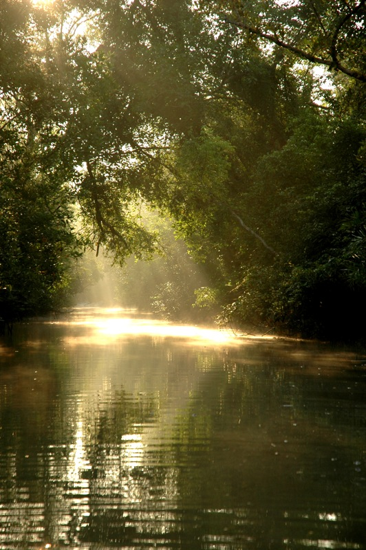

Sundarbans is a mangrove area in the delta formed by the confluence of the Ganges, Brahmaputra and Meghna Rivers in the Bay of Bengal. It spans the area from the Hooghly River in India's state of West Bengal to the Baleswar River in Bangladesh's division of Khulna. It comprises closed and open mangrove forests, land used for agricultural purpose, mudflats and barren land, and is intersected by multiple tidal streams and channels. Four protected areas in the Sundarbans are enlisted as UNESCO World Heritage Sites, viz. Sundarbans National Park, Sundarbans West, Sundarbans South and Sundarbans East Wildlife Sanctuaries.[3]
